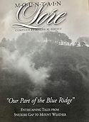

History of the Mountain
Bear’s Den Rural Historic District
Bear's Den Rural Historic District (BDRHD) is a national historic district located in Bluemont, Clarke County and Loudoun County. It encompasses 152 contributing buildings, 12 contributing sites, eight contributing structures, and one contributing object.
The district includes a collection of late 19th and early 20th century dwellings constructed as summer homes by wealthy Washingtonians attracted to the mountain's cooler climate. The architecture reflects a number of popular styles - primarily American Craftsman or Bungalow, Colonial Revival and Queen Anne.
Other contributing buildings include: farm outbuildings such as barns and stables; domestic outbuildings such as spring houses, meat houses, guest cottages, root cellars, and garages; a former school and a former church. The contributing sites include the ruins of buildings; including picnic shelters, above-ground cisterns, an old road bed; and the contributing object is a county boundary marker.
BDRHD is on the National Park Service’s National Register of Historic Places (2008) and the Virginia Landmarks Register (2009). The BRMCA is currently working with Clarke County to establish a Historical Highway Marker for the district.
TWA Crash on the Mountain
Trans World Airlines (TWA) flight 514 in route to Indianapolis, IN and Columbus, OH with a final destination at Washington Dulles International Airport, crashed into Mount Weather, Virginia on Sunday December 10, 1974. There were 85 passengers and seven crew members on board. No one survived the crash.
"It was one of the most completely destroyed aircraft wreckage I've ever seen", said former NTSB investigator, Dick Rodriguez.
The NTSB ruled that the crash occurred because the plane descended too low too soon and a series of catastrophic human errors which included a miscommunication between pilots and the air traffic controllers.
The NTSB recommendations accepted by the industry changed confusing airport approach charts, clearing up contradictory terminology that pilots and air traffic controllers used to communicate and insisting that Ground Proximity Warning Systems go on all commercial aircraft within the year.

Mountain Lore: Entertaining Tales from Snickersville Gap to Mt. Weather
$15 / copy
Blueridge Mountain Rd (Rt. 601) is a designated Virginia Scenic Byway, which early BRMCA founders may have worked to establish.